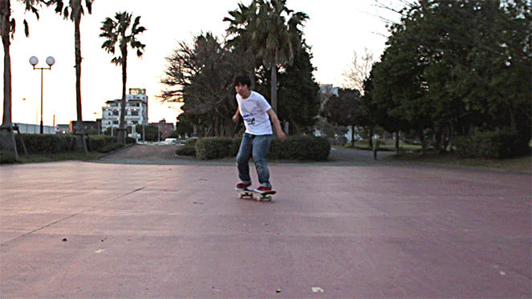
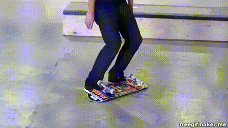

Now that you know how to ride and you're comfortable on your board let's learn a trick! One of the first "tricks" that I learned was the kickturn. Kickturns are extremely useful in skateboarding and are essential for maneuvering your board in different directions. The kickturn is like a normal turn except they are much quicker and sharper. For a kickturn you want to place your back foot on the tail rather than the back bolts. This will allow you to put pressure on the back tail and pick up the nose of your board. To perform a kickturn apply pressure to the tail of the board while easing off of your front foot. As you feel your weight shift to the back of your board turn your shoulders and your boddy in the direction you want to turn while maintaining pressure on your back foot. Finally return equal weight to both feet after performing the turn. Practice these turns without moving. Then start trying the kickturns while moving.
After mastering riding and kickturns I would recommend learning this simple trick called the Turtle Flip. This is a great beginner trick that get's you used to jumping onto your board and watching it flip under you. To do this trip place your board upside down. Then place your feet underneath the wheels. Next, jump up and forward. This will cause your board to flip, so that you can land on it right side up! This is a simple first trick that is great for beginners! Make sure to do a small jump up and slightly forward in order to land square on the board.
